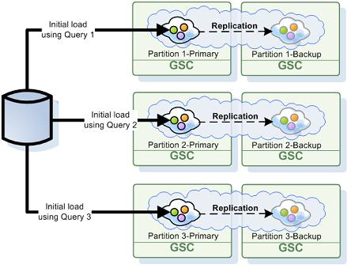

Section Summary: External Data Source (EDS) initial Load pre-load the space with data before it is available for clients.
Overview
The GigaSpaces Data-Grid includes special interceptor that allow users to pre-load the Data-Grid with data before it is available for client access. This interceptor called Initial Load and has a default implementation that is using the Hibernate EDS to load data from a database directly into the Data-Grid instances. By default each Data-Grid primary partition loading its relevant data from the database (parallel load).

All irrelevant objects are filtered out during the data load process. You may optimize this activity by instructing each Data-Grid primary instance to a load-specific data set from the database via a custom query you may construct during the initial load phase.
| The Initial Load is supported with the partitioned-sync2backup cluster schema. If you would like to pre-load a clustered space using the Initial-Load without running backups you can use the partitioned-sync2backup and have ZERO as the amount of backups. |
You can load 1T data into a Data-Grid in several minutes using this approach with the appropriate machines, network and database configuration.
To implement your own Initial Load when using the Hibernate EDS you should implement the initialLoad method to construct one or more DefaultScrollableDataIterator.
See example below:
import org.openspaces.persistency.hibernate.DefaultHibernateExternalDataSource; import org.openspaces.persistency.hibernate.iterator.DefaultScrollableDataIterator; import com.gigaspaces.datasource.DataIterator; public class EDSInitialLoadExample extends DefaultHibernateExternalDataSource { @Override public com.gigaspaces.datasource.DataIterator initialLoad() { String hquery = "from Employee where age>30"; DataIterator[] iterators = new DataIterator[1]; int iteratorCounter = 0; int fetchSize = 100; int from =-1; int size =-1; iterators [ iteratorCounter++ ] = new DefaultScrollableDataIterator(hquery, getSessionFactory() , fetchSize, from, size); //.. you can have additional DefaultScrollableDataIterator created with multiple queries return createInitialLoadIterator(iterators); } }
Additional level of customization can be done by loading only the relevant data into the partition.
In this case you should use the partition ID and total amount of partitions to form the correct database query. The relevant table column mapped to the routing field should have Numeric type to allow simple calculation of the matching rows that need to be retrieved from the database and loaded into the partition. This means your database query needs to "slice" the correct data set from the database tables based on the partition ID. The partition ID can be retrieved from the init(Properties) method. See below example:
package com.test; import java.util.Properties; import org.openspaces.persistency.hibernate.DefaultHibernateExternalDataSource; import org.openspaces.persistency.hibernate.iterator.DefaultScrollableDataIterator; import com.gigaspaces.datasource.DataIterator; public class EDSInitialLoadExample extends DefaultHibernateExternalDataSource { int partitionID ; int total_partitions; @Override public DataIterator initialLoad() { String hquery; if (total_partitions > 1) { hquery = "from com.test.domain.Person where MOD(department," + total_partitions + ") = " + (partitionID - 1); } else { hquery = "from com.test.domain.Person "; } DataIterator[] iterators = new DataIterator[1]; int iteratorCounter = 0; int fetchSize = 100; int from =-1; int size =-1; iterators[iteratorCounter++] = new DefaultScrollableDataIterator(hquery, getSessionFactory() , fetchSize, from, size); return createInitialLoadIterator(iterators); } @Override public void init(Properties props) { super.init(props); partitionID = Integer.valueOf(props.get(STATIC_PARTITION_NUMBER).toString()).intValue(); total_partitions= Integer.valueOf(props.get(NUMBER_OF_PARTITIONS).toString()).intValue(); System.out.println("partitionID " + partitionID + " total_partitions " + total_partitions); } }
 Make sure the routing field (i.e. PERSON_ID) will be an Integer type.
Make sure the routing field (i.e. PERSON_ID) will be an Integer type.
Since each space partition stores a subset of the data , based on the entry routing field hash code value , you need to load the data from the database in the same manner the client load balance the data when interacting with the different partitions.
The database query using the MOD , PERSON_ID , numberOfPartitions and the partitionNumber is identical to the activity done by a space client when performing write/read/take operations with partitioned space.
| prop.get(ManagedDataSource.STATIC_PARTITION_NUMBER) first number will be 1. If the space is not partitioned it will return 0. prop.get(ManagedDataSource.NUMBER_OF_PARTITIONS) will return 1 for non partitioned space. |